Objective
To install and set up Kali Linux on VMware using the prebuilt VMware image.
Prerequisites
- VMware Workstation Player or VMware Workstation Pro
- Prebuilt VMware image of Kali Linux
- A computer with virtualization enabled in BIOS
- Extraction software (e.g., WinRAR, 7-Zip)
Procedure
1. Download VMware Workstation Player
Install VMware Workstation Player if not already installed:
- Download from the official VMware website.
- Run the installer, accept the license agreement, and complete the installation.
Screenshot: VMware Installer Window
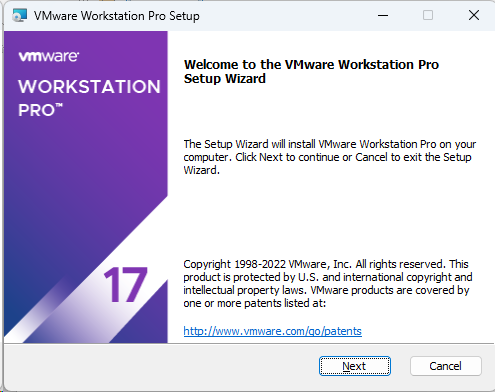
Figure 1.1.1: vmware installation
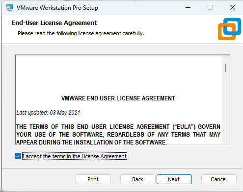
Figure 1.1.2: vmware installation
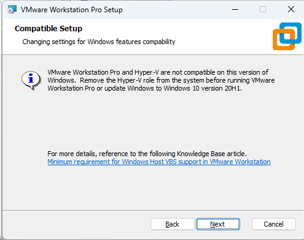
Figure 1.1.3: vmware installation
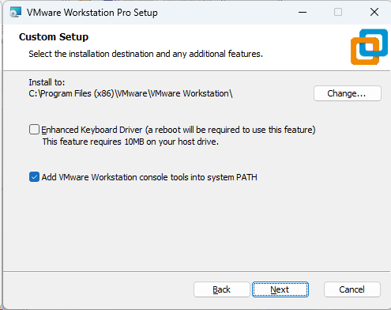
Figure 1.1.4: vmware installation
Figure 1.1.5: vmware installation
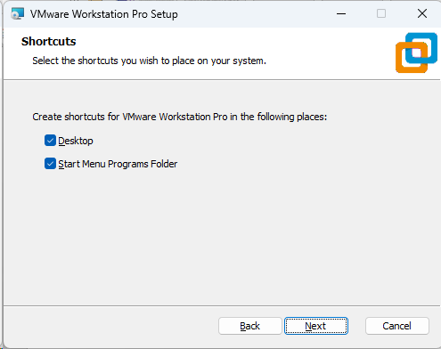
Figure 1.1.6: vmware installation
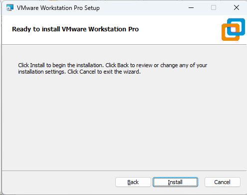
Figure 1.1.7: vmware installation
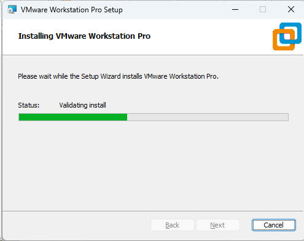
Figure 1.1.8: vmware installation
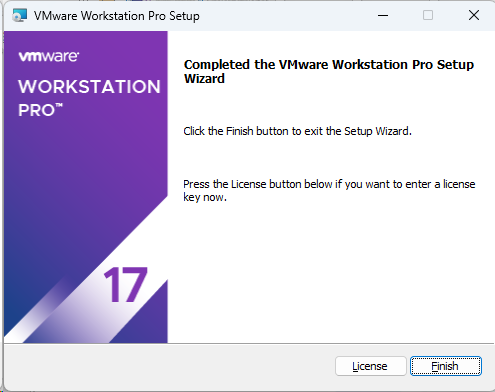
Figure 1.1.9: vmware installation
2. Download the Prebuilt VMware Image of Kali Linux
Download the prebuilt image for VMware:
Screenshot: Kali Linux VMware Image Download Page
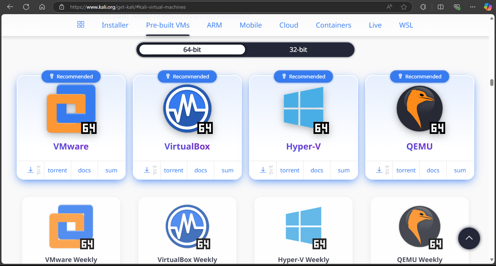
Figure 1.2.1: kali vmware vm download page
3. Extract and mount the VMware Image
Once downloaded, extract the file:
- Right-click on the downloaded file and choose Extract Here (use WinRAR, 7-Zip, etc.).
- The extracted folder will contain a `.vmx` file, which is the virtual machine configuration file.
- Double Click the .vmx file to mount it to the vmware
Screenshot: Extracted Kali Linux VMware Files and mounting to vmware
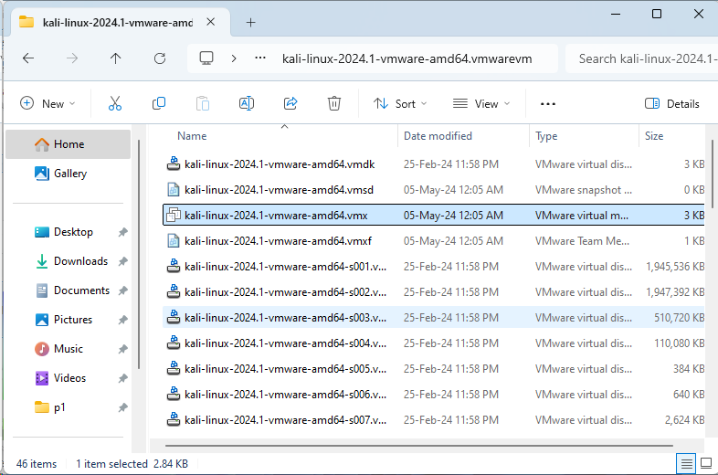
Figure 1.3.1: vmware folder
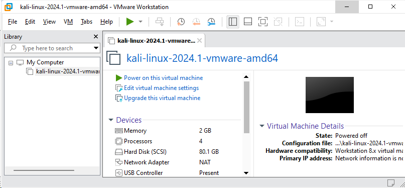
Figure 1.3.2: Mounting kali in vmware
Optional: Configure Virtual Machine Settings
Adjust settings if needed:
- Select the virtual machine and click on Edit virtual machine settings.
- Adjust the allocated RAM (minimum 2 GB, 4 GB recommended).
- Set the number of processor cores (at least 2).
4. Start the Virtual Machine
Power on the virtual machine:
- Click on Play virtual machine.
- The Kali Linux login screen will appear after booting.
- Default credentials (if using the official image):
- Username: kali
- Password: kali
Screenshot: Kali Linux Login Screen
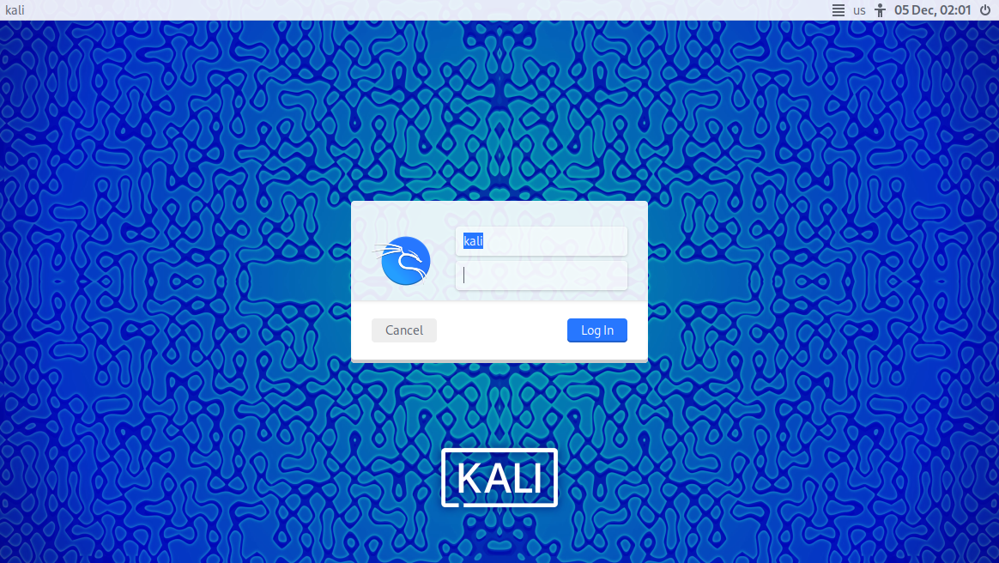
Figure 1.4.1: kali login screen
5. Update and Customize Kali Linux
Update the system to ensure the latest tools and security patches are installed:
sudo apt update && sudo apt upgrade -y
Customize the environment as needed for your practical requirements.
Conclusion
You have successfully set up Kali Linux on VMware using a prebuilt image. This environment can now be used for ethical hacking and penetration testing practices.